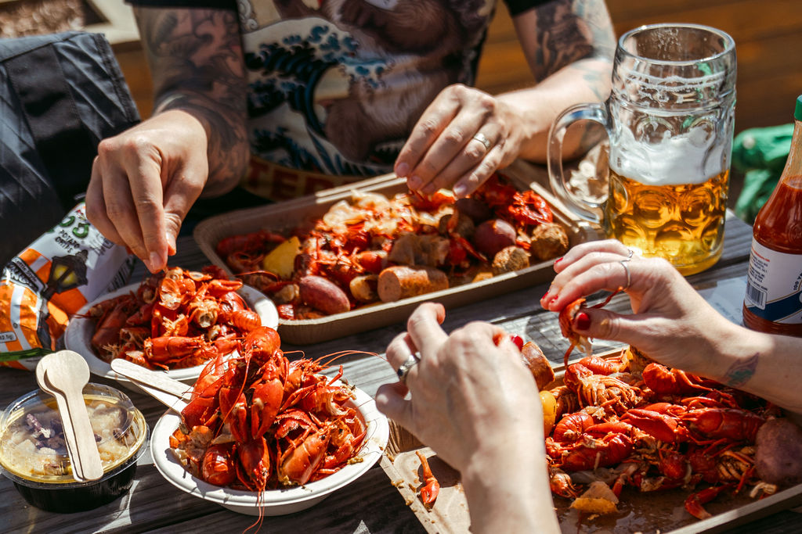
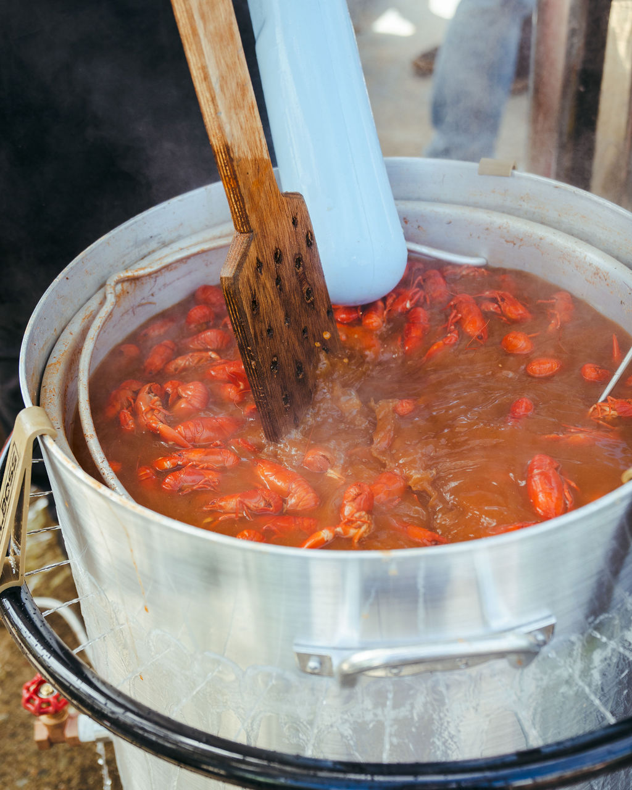

Private & Corporate
Bring the full Second Line experience to your crew — birthday parties, company retreats, weddings, fundraisers, block parties, and beyond.
The Pitch
Second Line Pleasure Club isn't a catering company. We're an experience — food, music, and intentional hosting wrapped into one. We've hosted events from 10 to 10,000 guests. Brewery patios, corporate campuses, rooftop terraces, backyard weekenders, festival grounds. Each one is customized to fit your crowd and your space.
Music is a full part of the offer. We can plan a live band, bring a vital DJ, bring other DJs with their own sound systems and PAs, or work with whatever infrastructure the venue already has. No infrastructure is needed — we can bring a complete experience. Food is equally flexible: beyond the crawfish, Aaron also specializes in pizza. Wood-fired or gas-fired pizza can be added to any package.


What We Offer
Packages below are starting points — everything is negotiable and custom. Submit a request form and we'll build the right package for you.
Great for birthday parties, neighborhood events, small office parties, and family celebrations.
Best for corporate events, retreat dinners, large birthday blowouts, and brand activations.
Built for companies who want something employees will actually remember. Not another catered lunch.
The Process
Use our booking request form or email us directly with your event date, location, guest count, and any notes on what you're imagining.
We'll jump on a quick call to talk through your vision, logistical needs, budget, and any customization requests. Usually 20–30 minutes.
You'll receive a custom proposal within 48 hours. A 50% deposit locks your date. The remainder is due the week of the event.
We arrive three hours early to set up and get the boil going. In some cases we can arrive with crawfish already hot and ready in a cooler, fully seasoned and ready to serve. You show up, eat, and enjoy your people.
Common Questions
40 lbs of crawfish — enough for about 10–15 hungry guests. Minimum headcount is 10.
You secure the venue; we bring everything else. We've worked with breweries, private homes, rooftops, corporate campuses, event spaces, and parks. If you have questions about a specific venue, just ask — we've seen a lot.
2–3 weeks minimum for smaller events; 4–6 weeks for larger or more complex events. Crawfish availability is seasonal (roughly March–July), so plan accordingly.
Yes. We offer vegetarian and shellfish-free options alongside the main boil and label everything clearly. We'll work through any major allergen concerns in the planning call.
Yes. We have a network of amazing musicians to fit any type of mood or setting — the list is constantly growing. Pleasure Club has to have good tunes.
The entire Bay Area and Sacramento region. Events further afield are possible with a travel fee — just ask.
Yes. Aaron specializes in pizza alongside the crawfish. Wood-fired or gas-fired can be added to any package. Makes for an exceptional spread.
Fill a parking lot, a patio, or a dining room. Let's talk.